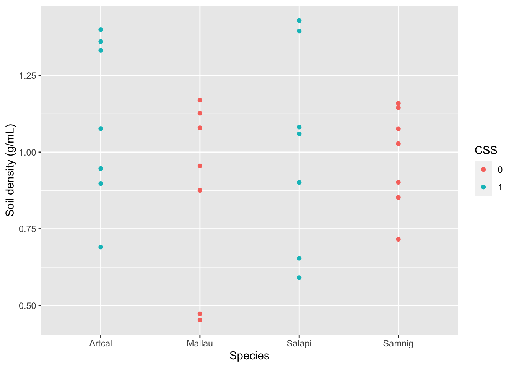
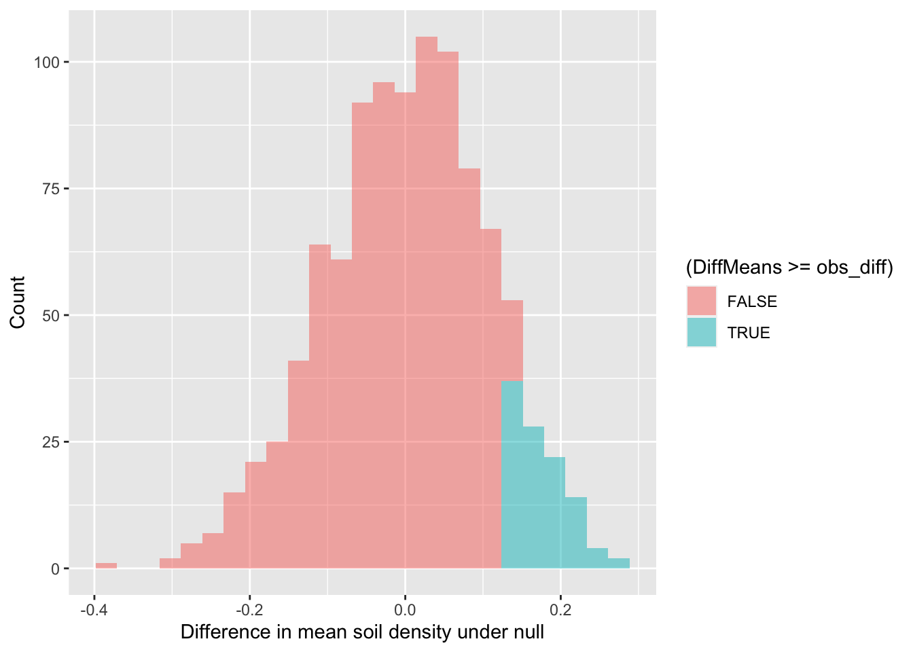
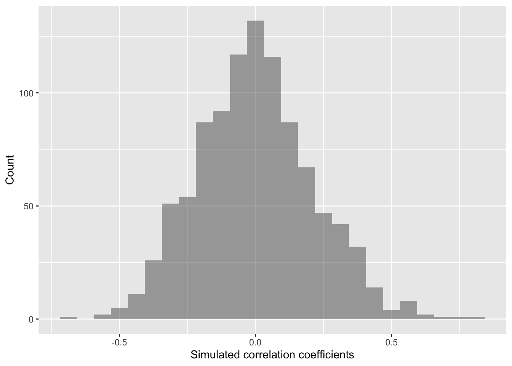

This page provides a demonstration on using R and shuffling our data to analyze your soil science hypotheses to generate figures and results for your poster presentation. You are welcome to either follow along with the text and copy-paste the code into the console or read through and then copy the whole script into a new R script in Rstudio.cloud. Please make sure that you start a new project using that link. Do not continue using the projects from the Air Quality Lab.
This table below shows the hypotheses for each group:
| Group | Hypothesis | Variables | Statistic |
|---|---|---|---|
| 1 | Do drought-deciduous plants store more C and N? |
Cperc, Nperc, PlantComm or CSS |
Difference in means |
| 2 | Is F:B positively correlated with SOM? | FBratio, SOM |
Correlation coefficient |
| 3 | Do woody plants have higher microbial biomass? | Microbes, PlantComm or CSS |
Difference in means |
| 4 | Is soil density positively correlated with total carbon levels? | SoilDensity, soilC |
Correlation coefficient |
| 5 | Is F:B correlated with C and N quantity? | FBratio, soilC, variable you will have to create (see soilC for an example) |
Regression model (lm) or correlation coefficients |
| 6 | Is soil organic matter higher in Coastal Sage Scrub plants? | SOM and PlantComm or CSS |
Difference in means |
| 7 | Is there a negative correlation between rock mass and N quantity? | Modify soilC to calculate soilN and use RockWeightG |
Correlation coefficient |
Below, we will start by loading packages that we’ll need.
### Load packages
library("ggplot2") # plotting functions
library("dplyr") # data wrangling functions
library("readr") # reading in tables, including ones online
library("mosaic") # shuffle (permute) our dataNext, we will pull in our data and start creating some useful variables, such as SoilDensity, the density of the soil (units: g/mL), or soilC, the quantity of carbon in the soil given its density.
### Load in dataset
soilDF <- readr::read_tsv("https://raw.githubusercontent.com/EA30POM/Fall2021/main/data/soilFullData.tsv") # read in spreadsheet from its URL and store in soilDF
### Preparing data
soilDF$CSS <- as.factor(soilDF$CSS) # convert 0 and 1 for CSS (coastal sage scrub) from numeric to categorical ("factor")
soilDF <- soilDF %>% # take soilDF object and feed it into -->
mutate(PlantComm = ifelse(CSS=="1","CSS","CHAP")) # use mutate to create a new column that has two types of plant communities: CSS and CHAP(arral)
### Calculate useful variables
soilDF <- soilDF %>% # take soilDF object and feed it into -->
mutate(SoilDensity = ( (ClodWeight1dip - (ClodNMinus1/NumAddedDips)) * (1 - (ClodWeightNdips-DriedWt)/ClodWeightNdips) - RockWeightG)/ClodVolumeInmL ) # create SoilDensity variable from columns in the data following Caspi et al. 2019
soilDF <- soilDF %>%
mutate(soilC = SoilDensity * 10^5 * Cperc/100 * 1/10^3) # create SoilDensity variable, which has these units: kg C/m2 at a depth of 10cm
### Display data
# View(soilDF) # open a spreadsheet viewer
# delete the leading comment/hashtag sign to run the code aboveBelow, I provide fully-worked examples of different ways of inspecting your data and performing analyses assuming that SoilDensity is the variable of interest. In applying this code to your own data, you will want to think about what variable name should replace SoilDensity in the commands below. For example, you would change tapply(soilDF$SoilDensity, soilDF$PlantComm, summary) to tapply(soilDF$ResponseVariable,soilDF$PlantComm, summary) where ResponseVariable is the variable you’re analyzing.
Let’s start with exploratory data analysis where you calculate summary statistics and visualize your variable.
### Calculate summary statistics for SoilDensity
### for each PlantComm(unity)
tapply(soilDF$SoilDensity, soilDF$PlantComm, summary) ## $CHAP
## Min. 1st Qu. Median Mean 3rd Qu. Max.
## 0.4531 0.8578 0.9913 0.9292 1.1147 1.1691
##
## $CSS
## Min. 1st Qu. Median Mean 3rd Qu. Max.
## 0.5908 0.8984 1.0682 1.0580 1.3530 1.4286 # use PlantComm as the grouping variable
# for SoilDensity and then summarize SoilDensity
# for each PlantComm(unity)How would I visualize the distribution of values of SoilDensity? I could use a histogram and color the values differently for Coastal Sage Scrub vs. chaparral.
### Visualize your variable of interest
# Histogram
gf_histogram(~SoilDensity, # plot distribution of SoilDensity
fill=~CSS, # change colors based on CSS (or not)
data=soilDF, # the data come from the soilDF object
xlab="Soil density (g/mL)",# change the x-axis label
ylab="Count") # change the y-axis labelAlternatively, I could create a boxplot to visualize the distribution of values in SoilDensity with two boxplots for each plant community.
### Visualize your variable of interest
# Boxplot
gf_boxplot(SoilDensity~CSS, # plot distribution of SoilDensity for CSS
fill= ~CSS, # change colors based on CSS (or not)
data=soilDF, # the data come from the soilDF object
xlab="Woody vegetation", # change x-axis label
ylab="Soil density (g/mL)")# change y-axis labelFinally, if I am interested in the relationship between two or more variables, I can use a scatterplot to visualize each pair of data.
### Visualization
# Scatterplot
gf_point(SoilDensity~Species, # plot SoilDensity against plant Species
color= ~CSS, # change colors based on CSS (or not)
data= soilDF, # the data come from the soilDF object
xlab="Species", # change x-axis label
ylab="Soil density (g/mL)") # change y-axis label
The code below shows you how to do different types of analyses.
Let’s say I am interested in determining if Coastal Sage Scrub (CSS) plants tend to have higher soil density than Chaparral (CHAP) plants. This sounds like I want to see if there is a clear difference in the mean values of SoilDensity for the CSS plants versus the CHAP plants. We can start by calculating the mean difference we observe.
mean( SoilDensity ~ PlantComm, data = soilDF , na.rm=T) # show mean SoilDensity values for the plant communities and remove missing data## CHAP CSS
## 0.9291509 1.0580391obs_diff <- diff( mean( SoilDensity ~ PlantComm, data = soilDF , na.rm=T)) # calculate the difference between the means and store in a variable called "obs_diff"
obs_diff # display the value of obs_diff## CSS
## 0.1288881OK, so the mean difference in mean soil density between CSS and CHAP is 0.13. Are the plant communities meaningfully different in terms of soil density though? Our null hypothesis would be that there is no difference in soil density between the plant communities.
Logically, if there is a meaningful difference, then if we shuffle our data around, that should lead to different results than what we see. That is one way to simulate statistics to test the null hypothesis. And specifically, in this case, we would expect to see our observed difference is much larger than most of the simulated values.
What does simulating our data look like?
Well, here is what the data look like initially:
soilDF[,c(1:4,19:21)]## # A tibble: 28 x 7
## SampleID Species Group CSS PlantComm SoilDensity soilC
## <chr> <chr> <dbl> <fct> <chr> <dbl> <dbl>
## 1 Artcal1 Artcal 1 1 CSS 1.33 2.20
## 2 Mallau1 Mallau 1 0 CHAP 1.08 2.64
## 3 Salapi1 Salapi 1 1 CSS 1.39 2.37
## 4 Samnig1 Samnig 1 0 CHAP 0.852 0.801
## 5 Artcal2 Artcal 2 1 CSS 0.946 7.26
## 6 Mallau2 Mallau 2 0 CHAP 0.473 2.05
## 7 Salapi2 Salapi 2 1 CSS 1.06 1.88
## 8 Samnig2 Samnig 2 0 CHAP 1.16 2.19
## 9 Artcal3 Artcal 3 1 CSS 0.691 1.57
## 10 Mallau3 Mallau 3 0 CHAP 0.453 9.47
## # … with 18 more rowsHere is what it looks like after we’ve “shuffled” it once by randomizing the PlantComm assignments. This is like taking a deck of cards with different SoilDensity or SoilC(arbon) values, and being able to change their color and suite (in this case, plant community associated with that card).
resample(soilDF[,c(1:4,19:21)],groups=PlantComm,shuffled=c("SoilDensity","soilC"))## # A tibble: 28 x 8
## SampleID Species Group CSS PlantComm SoilDensity soilC orig.id
## <chr> <chr> <dbl> <fct> <chr> <dbl> <dbl> <chr>
## 1 Mallau6 Mallau 6 0 CHAP 0.901 3.36 22.28.28
## 2 Mallau4 Mallau 4 0 CHAP 1.08 2.72 14.2.24
## 3 Mallau4 Mallau 4 0 CHAP 1.08 2.48 14.24.18
## 4 Samnig6 Samnig 6 0 CHAP 0.955 0.801 24.22.4
## 5 Mallau5 Mallau 5 0 CHAP 0.875 2.48 18.14.18
## 6 Samnig1 Samnig 1 0 CHAP 0.453 9.47 4.10.10
## 7 Mallau5 Mallau 5 0 CHAP 1.08 2.51 18.24.14
## 8 Samnig7 Samnig 7 0 CHAP 1.17 0.554 28.18.22
## 9 Samnig5 Samnig 5 0 CHAP 0.852 2.64 20.4.2
## 10 Mallau3 Mallau 3 0 CHAP 0.453 2.51 10.10.14
## # … with 18 more rowsWe can repeat that procedure again and see how the data shifts when we do another shuffle.
resample(soilDF[,c(1:4,19:21)],groups=PlantComm,shuffled=c("SoilDensity","soilC"))## # A tibble: 28 x 8
## SampleID Species Group CSS PlantComm SoilDensity soilC orig.id
## <chr> <chr> <dbl> <fct> <chr> <dbl> <dbl> <chr>
## 1 Samnig4 Samnig 4 0 CHAP 0.852 9.47 16.4.10
## 2 Samnig3 Samnig 3 0 CHAP 1.13 0.801 12.26.4
## 3 Mallau7 Mallau 7 0 CHAP 0.852 2.72 26.4.24
## 4 Samnig1 Samnig 1 0 CHAP 0.716 0.801 4.12.4
## 5 Samnig3 Samnig 3 0 CHAP 0.716 2.51 12.12.26
## 6 Samnig4 Samnig 4 0 CHAP 0.716 6.64 16.12.12
## 7 Samnig1 Samnig 1 0 CHAP 1.03 0.801 4.16.4
## 8 Samnig6 Samnig 6 0 CHAP 0.852 0.801 24.4.4
## 9 Samnig1 Samnig 1 0 CHAP 1.03 6.64 4.16.12
## 10 Samnig1 Samnig 1 0 CHAP 0.852 6.64 4.4.12
## # … with 18 more rowsLet’s shuffle the data and see what that means for the distribution of mean SoilDensity differences between CSS and CHAP.
### Create random differences by shuffling the data
randomizing_diffs <- do(1000) * diff( mean( SoilDensity ~ shuffle(PlantComm),na.rm=T, data = soilDF) ) # calculate the mean in SoilDensity when we're shuffling the plant community around 1000 times
# Clean up our shuffled data
names(randomizing_diffs)[1] <- "DiffMeans" # change the name of the variable
# View first few rows of data
head(randomizing_diffs)## DiffMeans
## 1 -0.13261329
## 2 -0.11883809
## 3 -0.12149048
## 4 0.06824462
## 5 -0.10695182
## 6 -0.06327423Now we can visualize the distribution of simulated differences in mean soil density and our observed difference between CSS and CHAP.
gf_histogram(~ DiffMeans, fill = ~ (DiffMeans >= obs_diff),
data = randomizing_diffs,
xlab="Difference in mean soil density under null",
ylab="Count")
In the end, how many of the simulated mean differences were larger than the value we observed? Based on this value, if we were using the conventional \(p\)-value (probability value) of 0.05, we would conclude that because this simulated \(p\)-value > 0.05, that we cannot reject the null hypothesis.
# What proportion of simulated values were larger than our observed difference
prop( ~ DiffMeans >= 0.142, data = randomizing_diffs) # 0.142 was the observed difference value - see obs_diff## prop_TRUE
## 0.082How would I determine if there is a non-zero correlation between two variables or that two variables are positively correlated? I can again start by calculating the observed correlation coefficient for the data.
### Calculate observed correlation
obs_cor <- cor(BacterialPerc ~ SoilDensity, data=soilDF, use="complete.obs") # store observed correlation in obs_cor of BacterialPerc vs. SoilDensity
obs_cor # print out value## [1] -0.01111519Let’s say that I’m interested in determining if the percentage of bacteria is negatively correlated with soil density. Our null hypothesis could be that the correlation coefficient is actually 0. As before though, how do I know that my correlation coefficient of 0 is significantly different from 0? We can tackle this question by simulating a ton of correlation coefficient values from our data by shuffling it!
In this case, the shuffling here lets us estimate the variation in the correlation coefficient given our data. So we are curious now if the distribution of simulated values does or does not include 0 (that is, is it clearly \(< 0\) or \(> 0\)?).
### Calculate correlation coefs for shuffled data
randomizing_cor <- do(1000) * cor(BacterialPerc ~ SoilDensity,
data = resample(soilDF),
use="complete.obs")
# Shuffle the data 1000 times
# Calculate the correlation coefficient each time
# By correlating BacterialPerc to SoilDensity from the
# data object soilDFWhat are the distribution of correlation coefficients that we see when we shuffle our data?
quantiles_cor <- qdata( ~ cor, p = c(0.025, 0.975), data=randomizing_cor) # calculate the 2.5% and 97.5% quantiles in our simulated correlation coefficient data (note that 97.5-2.5 = 95!)
quantiles_cor # display the quantiles## 2.5% 97.5%
## -0.3850115 0.4429795The values above give us a 95% confidence interval estimate for our correlation coefficient!
Do we clearly see that our correlation coefficient distribution does or doesn’t include 0?
gf_histogram(~ cor,
data = randomizing_cor,
xlab="Simulated correlation coefficients",
ylab="Count")
In this case, our simulated correlation coefficient includes 0 in its 95% simulated confidence interval. We can also see this in the plot. So given these data, we cannot reject the null hypothesis. There is not sufficiently strong data that percent bacteria associates with soil density in any clear way.
The last type of analysis we’ll look at is a regression model. Specifically, we’ll do an analysis with two predictor variables. We are evaluating how soil density covaries with percent bacteria and the weight of 2-3 resin dips (ClodNMinus1).
We can see how our response variable co-varies with each predictor variable by using scatterplots. Here we can also add a line for each pair of variables.
gf_point(SoilDensity ~ BacterialPerc, # plot soil density against bacteria
data=soilDF, # from the soilDF data
xlab="Bacteria %", # change x-axis label
ylab="Soil density (g/mL)") %>% # change y-axis label
gf_lm() # add a regression line for these two variables onlyNow let’s run a linear regression for multiple predictor variables (multiple regression).
lm_mod <- lm(SoilDensity ~ BacterialPerc + ClodNMinus1, data=soilDF) # perform linear regression of soil density against bacterial percentage and resin weight and store in an object called lm_mod
lm_mod # print object##
## Call:
## lm(formula = SoilDensity ~ BacterialPerc + ClodNMinus1, data = soilDF)
##
## Coefficients:
## (Intercept) BacterialPerc ClodNMinus1
## 1.024700 0.001395 -0.072026We can also shuffle our data to estimate the variation in the coefficient values. Our null is that the coefficient estimates are equal to 0. That is, there is no relationship between soil density and bacterial percentage or resin dip weight. If the simulated coefficient estimates have an interval that doesn’t cross 0 (go from negative to positive), then that is evidence against the null hypothesis.
lm_boot <- do(1000) * lm(SoilDensity ~ BacterialPerc + ClodNMinus1, data=resample(soilDF)) # shuffle our data 1000 times and re-run the linear model each time and store the outputs in lm_boot
confint(lm_boot) # generate a 95% confidence interval from the simulated values for the linear regression coefficients## name lower upper level method estimate
## 1 Intercept 0.438163749 1.448689039 0.95 percentile 1.024699637
## 2 BacterialPerc -0.004041373 0.008190237 0.95 percentile 0.001395041
## 3 ClodNMinus1 -0.111839871 -0.040983250 0.95 percentile -0.072025910
## 4 sigma 0.147386791 0.253870428 0.95 percentile 0.215825625
## 5 r.squared 0.160320095 0.682881677 0.95 percentile 0.408701398
## 6 F 2.386625357 26.917467176 0.95 percentile 8.639911321Based on the values above, as clod resin weight increases by one gram, soil density decreases by as much as 0.11 grams and as little as 0.015 grams. On the other hand, it looks like bacterial percentage does not have a clear directional effect on soil density.
The segment below can be directly copied and pasted into the code editor in RStudio Cloud.
###=========================================
### Load packages
###=========================================
library("ggplot2") # plotting functions
library("dplyr") # data wrangling functions
library("readr") # reading in tables, including ones online
library("mosaic") # shuffle (permute) our data
###=========================================
### Load and process data
###=========================================
### Load in dataset
soilDF <- readr::read_tsv("https://raw.githubusercontent.com/EA30POM/Fall2021/main/data/soilFullData.tsv") # read in spreadsheet from its URL and store in soilDF
### Preparing data
soilDF$CSS <- as.factor(soilDF$CSS) # convert 0 and 1 for CSS (coastal sage scrub) from numeric to categorical ("factor")
soilDF <- soilDF %>% # take soilDF object and feed it into -->
mutate(PlantComm = ifelse(CSS=="1","CSS","CHAP")) # use mutate to create a new column that has two types of plant communities: CSS and CHAP(arral)
### Calculate useful variables
soilDF <- soilDF %>% # take soilDF object and feed it into -->
mutate(SoilDensity = ( (ClodWeight1dip - (ClodNMinus1/NumAddedDips)) * (1 - (ClodWeightNdips-DriedWt)/ClodWeightNdips) - RockWeightG)/ClodVolumeInmL ) # create SoilDensity variable from columns in the data following Caspi et al. 2019
soilDF <- soilDF %>%
mutate(soilC = SoilDensity * 10^5 * Cperc/100 * 1/10^3) # create SoilDensity variable, which has these units: kg C/m2 at a depth of 10cm
### Display data
View(soilDF) # open a spreadsheet viewer
###=========================================
### Exploratory data analysis
###=========================================
### Calculate summary statistics for SoilDensity
### for each PlantComm(unity)
tapply(soilDF$SoilDensity, soilDF$PlantComm, summary)
# use PlantComm as the grouping variable
# for SoilDensity and then summarize SoilDensity
# for each PlantComm(unity)
### Visualize your variable of interest
# Histogram
gf_histogram(~SoilDensity, # plot distribution of SoilDensity
fill=~CSS, # change colors based on CSS (or not)
data=soilDF, # the data come from the soilDF object
xlab="Soil density (g/mL)",# change the x-axis label
ylab="Count") # change the y-axis label
### Visualize your variable of interest
# Boxplot
gf_boxplot(SoilDensity~CSS, # plot distribution of SoilDensity for CSS
fill= ~CSS, # change colors based on CSS (or not)
data=soilDF, # the data come from the soilDF object
xlab="Woody vegetation", # change x-axis label
ylab="Soil density (g/mL)")# change y-axis label
### Visualization
# Scatterplot
gf_point(SoilDensity~Species, # plot SoilDensity against plant Species
color= ~CSS, # change colors based on CSS (or not)
data= soilDF, # the data come from the soilDF object
xlab="Species", # change x-axis label
ylab="Soil density (g/mL)") # change y-axis label
###=========================================
### Analysis - Differences in means
###=========================================
mean( SoilDensity ~ PlantComm, data = soilDF , na.rm=T) # show mean SoilDensity values for the plant communities and remove missing data
obs_diff <- diff( mean( SoilDensity ~ PlantComm, data = soilDF , na.rm=T)) # calculate the difference between the means and store in a variable called "obs_diff"
obs_diff # display the value of obs_diff
### Create random differences by shuffling the data
randomizing_diffs <- do(1000) * diff( mean( SoilDensity ~ shuffle(PlantComm),na.rm=T, data = soilDF) ) # calculate the mean in SoilDensity when we're shuffling the plant community around 1000 times
# Clean up our shuffled data
names(randomizing_diffs)[1] <- "DiffMeans" # change the name of the variable
# View first few rows of data
head(randomizing_diffs)
gf_histogram(~ DiffMeans, fill = ~ (DiffMeans >= obs_diff),
data = randomizing_diffs,
xlab="Difference in mean soil density under null",
ylab="Count")
###=========================================
### Analysis - Correlation coefficient
###=========================================
### Calculate observed correlation
obs_cor <- cor(BacterialPerc ~ SoilDensity, data=soilDF, use="complete.obs") # store observed correlation in obs_cor of BacterialPerc vs. SoilDensity
obs_cor # print out value
### Calculate correlation coefs for shuffled data
randomizing_cor <- do(1000) * cor(BacterialPerc ~ SoilDensity,
data = resample(soilDF),
use="complete.obs")
# Shuffle the data 1000 times
# Calculate the correlation coefficient each time
# By correlating BacterialPerc to SoilDensity from the
# data object soilDF
quantiles_cor <- qdata( ~ cor, p = c(0.025, 0.975), data=randomizing_cor) # calculate the 2.5% and 97.5% quantiles in our simulated correlation coefficient data (note that 97.5-2.5 = 95!)
quantiles_cor # display the quantiles
gf_histogram(~ cor, fill = ~ (cor > 0),
data = randomizing_cor,
xlab="Simulated correlation coefficients",
ylab="Count")
###=========================================
### Analysis - Linear regression
###=========================================
### Initial visualization
gf_point(SoilDensity ~ BacterialPerc, # plot soil density against bacteria
data=soilDF, # from the soilDF data
xlab="Bacteria %", # change x-axis label
ylab="Soil density (g/mL)") %>% # change y-axis label
gf_lm() # add a regression line for these two variables only
lm_mod <- lm(SoilDensity ~ BacterialPerc + ClodNMinus1, data=soilDF) # perform linear regression of soil density against bacterial percentage and resin weight and store in an object called lm_mod
lm_mod # print object
lm_boot <- do(1000) * lm(SoilDensity ~ BacterialPerc + ClodNMinus1, data=resample(soilDF)) # shuffle our data 1000 times and re-run the linear model each time and store the outputs in lm_boot
confint(lm_boot) # generate a 95% confidence interval from the simulated values for the linear regression coefficients